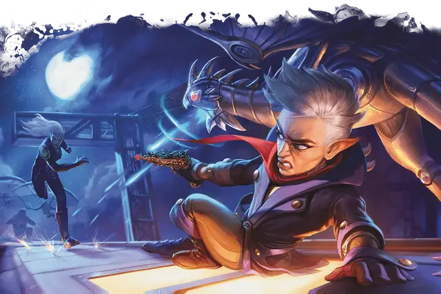

Изобретатель
Artificer

Кость Хитов 1к8 за каждый уровень изобретателя
Хиты на 1 уровне 8 + модификатор Телосложения
Хиты на следующих уровнях 1к8 (или 5) + модификатор Телосложения (суммарно минимум 1) за каждый уровень изобретателя после первого.
Доспехи Лёгкие доспехи, средние доспехи, щиты
Оружие Простое оружие
Инструменты Воровские инструменты, инструменты ремонтника, а также один тип инструментов ремесленника на ваш выбор
Спасброски Телосложение, Интеллект
Навыки Выберите два навыка из следующих: Восприятие, История, Ловкость рук, Магия, Медицина, Природа, Расследование.
В различных уголках мультивселенной D&D создано и используется огнестрельное оружие. Если ваш Мастер использует правила по огнестрельному оружию из «Руководства Мастера» (см. главу 9, раздел «Огнестрельное оружие»), и ваш изобретатель понимает, как пользоваться таким оружием, у него есть соответствующий навык владения.
Снаряжение Вы начинаете со следующим снаряжением в дополнение к снаряжению, полученному за вашу предысторию:
• два простых оружия на ваш выбор
• лёгкий арбалет и 20 болтов
• а) проклёпанная кожа или б) чешуйчатый доспех
• воровские инструменты и набор исследователя подземелий
Если вы откажетесь от этого снаряжения, а также от предметов, предлагаемых вашей предысторией, то вы начнёте игру с 5к4×10 зм для покупки снаряжения.
| Уровень | Бонус мастерства | Умения | Известные инфузии | Инфузии предметов | Известные заговоры | Ячейки заклинаний на уровень заклинаний | ||||
|---|---|---|---|---|---|---|---|---|---|---|
| 1 | 2 | 3 | 4 | 5 | ||||||
| 1 | +2 | Магический мастеровой, Использование заклинаний | - | - | 2 | 2 | - | - | - | - |
| 2 | +2 | Инфузирование предмета | 4 | 2 | 2 | 2 | - | - | - | - |
| 3 | +2 | Специальность изобретателя, Подходящий инструмент | 4 | 2 | 2 | 3 | - | - | - | - |
| 4 | +2 | Увеличение характеристик | 4 | 2 | 2 | 3 | - | - | - | - |
| 5 | +3 | Умение специальности | 4 | 2 | 2 | 4 | 2 | - | - | - |
| 6 | +3 | Компетентность во владении инструментами | 6 | 3 | 2 | 4 | 2 | - | - | - |
| 7 | +3 | Проблеск гениальности | 6 | 3 | 2 | 4 | 3 | - | - | - |
| 8 | +3 | Увеличение характеристик | 6 | 3 | 2 | 4 | 3 | - | - | - |
| 9 | +4 | Умение специальности | 6 | 3 | 2 | 4 | 3 | 2 | - | - |
| 10 | +4 | Эксперт в обращении с магическими предметами | 8 | 4 | 3 | 4 | 3 | 2 | - | - |
| 11 | +4 | Хранящий заклинания предмет | 8 | 4 | 3 | 4 | 3 | 3 | - | - |
| 12 | +4 | Увеличение характеристик | 8 | 4 | 3 | 4 | 3 | 3 | - | - |
| 13 | +5 | - | 8 | 4 | 3 | 4 | 3 | 3 | 1 | - |
| 14 | +5 | Учёный по магическим предметам | 10 | 5 | 4 | 4 | 3 | 3 | 1 | - |
| 15 | +5 | Умение специальности | 10 | 5 | 4 | 4 | 3 | 3 | 2 | - |
| 16 | +5 | Увеличение характеристик | 10 | 5 | 4 | 4 | 3 | 3 | 2 | - |
| 17 | +6 | - | 10 | 5 | 4 | 4 | 3 | 3 | 3 | 1 |
| 18 | +6 | Мастер в обращении с магическими предметами | 12 | 6 | 4 | 4 | 3 | 3 | 3 | 1 |
| 19 | +6 | Увеличение характеристик | 12 | 6 | 4 | 4 | 3 | 3 | 3 | 2 |
| 20 | +6 | Душа изобретения | 12 | 6 | 4 | 4 | 3 | 3 | 3 | 2 |
Описание
Изобретатели придумывают самые серьёзные проблемы, а затем пытаются их разрешить, шумно и часто — с сопутствующим ущербом.
- ТАША
Изобретатели — величайшие мастера пробуждать магию в обычных предметах. Они рассматривают магию как сложную систему, которую следует расшифровать и применять в заклинаниях и изобретениях. Для направления своей магической силы они используют различные инструменты. Накладывая заклинание, изобретатель может использовать принадлежности алхимика для создания мощного эликсира, набор каллиграфа, чтобы нарисовать знак силы на доспехах союзника или инструменты ремонтника, чтобы создать временный амулет. Магия изобретателей связана с их инструментами и способностями, и мало кто, кроме них, сможет создать правильный рабочий инструмент.
Создание персонажа
Изобретатели в различных мирах
По всей мультивселенной D&D изобретатели создают магические предметы для мира и войны. Многие были спасены или вернулись к жизни благодаря работе добрых изобретателей, но бесчисленное множество погибло из-за творений, созданных некоторыми изобретателями для массового уничтожения.
В Забытых Королевствах остров Лантан является домом для многих изобретателей, а в мире «Саги о Копье» гномы-механики часто являются представителями этого класса. Странные технологии Барьерных вершин мира Грейхок вдохновили некоторых людей избрать путь изобретателя, а в Мистаре разные народы нанимают изобретателей для обеспечения работы дирижаблей и других чудесных устройств.
В городе Сигил сеттинга Плэнскейп изобретатели делятся открытиями, сделанными во всех мирах, и один из них, гном-изобретательница по имени Ви, ведет из Сигила свой бизнес по всей мультивселенной, нанимая искателей приключений для решения проблем, которые другие считают неразрешимыми. В родном мире Ви, Эберроне, магия используется как отрасль науки и распространена в обществе, в основном, благодаря удивительному мастерству изобретателей.
Создание изобретателя
Чтобы создать изобретателя, обратитесь к следующим подразделам, которые дают вам хиты, навыки и начальное снаряжение. Затем посмотрите в таблицу «Изобретатель», чтобы узнать, какие умения вы получаете на каждом уровне. Описания этих умений приведены в разделе «Классовые умения» ниже.
Быстрое создание
Вы можете быстро создать изобретателя, следуя этим рекомендациям. Во-первых, у вашего Интеллекта должно быть наивысшее значение. Следующим по величине должно быть значение Телосложения или Ловкости. Во-вторых, выберите предысторию «гильдейский ремесленник».
Инфузии изобретателя
Магические инфузии — это удивительный процесс, быстро превращающий обычный предмет в волшебный. В описании каждой из перечисленных далее инфузий указывается тип объекта, который можно подвергнуть процессу, а также то, требует ли полученный магический предмет настройки.
Некоторые из инфузий требуют определённого минимального уровня изобретателя. Вы не можете изучить такую инфузию, пока не достигнете этого уровня.
Вы не можете изучить инфузию более одного раза, если её описание не говорит об обратном.
Сортировка:
- По уровню
- По названию
Возвращающееся оружие
Предмет: любое простое или воинское оружие со свойством «метательное»
Это магическое оружие даёт бонус +1 к броскам атаки и урона, а также мгновенно возвращается в руку владельца после использования оружия для дальнобойной атаки.
Движимый магией доспех
Требование: 14-й уровень изобретателя
Предмет: доспех (требуется настройка)
Носитель данного доспеха приобретает следующие преимущества:
- Скорость ходьбы носителя увеличивается на 5 футов
- Доспех включает в себя рукавицы, являющиеся простым магическим рукопашным оружием, каждую из них можно использовать, при условии, что вы ничего не держите в руке. Носитель доспеха получает владение этими рукавицами, каждая из которых наносит 1к8 урона силовым полем при попадании и обладает свойством «метательное» с нормальной дистанцией 20 футов и максимальной дистанцией 60 футов. При метании рукавица отделяется и летит к цели, после чего немедленно возвращается к владельцу и снова прикрепляется.
- Доспех не может быть снят против воли владельца.
- Если у носителя отсутствуют какие-либо конечности, доспех заменяет их, как бы они не выглядели. Замена функционирует как идентичная часть тела, которую она заменяет.
Доспех магической силы
Предмет: доспех (требуется настройка)
Этот доспех имеет 6 зарядов. Носитель может расходовать заряды следующими способами:
- Когда носитель совершает проверку Силы или спасбросок Силы, он может потратить 1 заряд, чтобы добавить к броску бонус, равный вашему модификатору Интеллекта.
- Если носитель будет сбит с ног, он может использовать реакцию, чтобы потратить 1 заряд и избежать этого.
Доспех восстанавливает 1к6 израсходованных зарядов ежедневно на рассвете.
Доспех сопротивления
Требование: 6-й уровень изобретателя
Предмет: доспех (требует настройки)
Пока носитель облачён в этот доспех, он получает сопротивление одному из следующих типов урона, который вы выбираете в момент наполнения предмета инфузией: звук, излучение, кислота, некротическая энергия, огонь, психическая энергия, силовое поле, холод, электричество или яд.
Излучающее свет оружие
Требование: 6-й уровень изобретателя
Предмет: простое или воинское оружие (требуется настройка)
Это магическое оружие даёт бонус +1 к броскам атаки и урона, которые владелец совершает этим оружием. Держа его в руках, владелец может бонусным действием заставить оружие излучать яркий свет в радиусе 30 футов и тусклый свет в радиусе еще 30 футов. Владелец может погасить свет бонусным действием.
Оружие имеет 4 заряда. После того, как по владельцу оружия попадают атакой, он может использовать реакцию и потратить 1 заряд, чтобы ослепить атакующего до конца его следующего хода, если атакующий не преуспеет в спасброске Телосложения против Сл спасброска ваших заклинаний. Оружие ежедневно восстанавливает 1к4 израсходованных зарядов на рассвете.
Кольцо восстановления заклинаний
Требование: 6-й уровень изобретателя
Предмет: кольцо (требуется настройка)
Пока существо носит это кольцо, оно может действием восстановить одну израсходованную ячейку заклинаний. Восстановленная ячейка может быть 3-го уровня или ниже. После использования кольца носитель не сможет воспользоваться им еще раз до следующего рассвета.
Копия магического предмета
Используя эту инфузию, вы создаёте копию определенного магического предмета. Вы можете изучить эту инфузию несколько раз — каждый раз, когда вы делаете это, выбирайте магический предмет, который вы хотите создать, из таблиц «Копируемые предметы» ниже. Название таблицы говорит, какого уровня вы должны быть в этом классе, чтобы скопировать тот или иной предмет. Кроме того, вы можете копировать обычные магические предметы, за исключением зелий и свитков.
В таблице указано, требуется ли настройка на этот предмет.
Отталкивающий щит
Требование: 6-й уровень изобретателя
Предмет: щит (требует настройки)
Существо получает бонус +1 к КД при использовании этого щита.
Щит имеет 4 заряда. Держа этот щит, владелец может сразу же после того, как по нему попадают рукопашной атакой, реакцией потратить 1 заряд щита и оттолкнуть атакующего на расстояние до 15 футов. Щит ежедневно восстанавливает 1к4 израсходованных зарядов на рассвете.
Повторный выстрел
Предмет: простое или воинское оружие со свойством «боеприпас» (требует настройки)
Это магическое оружие дарует +1 к броскам атаки и урона если используется для дальнобойных атак, и игнорирует свойство «перезарядка», если оно есть.
Если вы ничего не заряжаете в оружие, оно производит собственные боеприпасы, автоматически создавая один магический боеприпас во время совершения атакующим дальнобойной атаки. Боеприпас, созданный оружием, сразу же исчезает после того, как попадает или промахивается по цели.
Сапоги извилистого пути
Требование: 6 уровень изобретателя
Предмет: пара сапог (требуется настройка)
Существо, носящее эти сапоги, может бонусным действием телепортироваться на расстояние до 15 футов в свободное пространство, которое оно может видеть. Существо должно было находиться в целевой точке в какой-то момент времени на текущем ходу.
Слуга-гомункул
Предмет: драгоценный камень или кристалл стоимостью не менее 100 зм
Вы изучаете замысловатые методы магического создания гомункула, который будет вам служить. Предмет, который вы наполняете инфузией, становится сердцем существа, вокруг которого мгновенно формируется его тело.
Вы определяете внешность гомункула. Некоторые изобретатели предпочитают механических птиц, тогда как другим нравятся крылатые склянки или миниатюрные котелки.
Гомункул дружелюбен к вам и вашим спутникам и подчиняется вашим командам. Игровые характеристики этого существа находятся в блоке статистики «Слуга-гомункул». В блоке используется ваш бонус мастерства (БМ) в некоторых местах.
В бою гомункул имеет такую же инициативу, как и вы, и ходит сразу же после вас. Он может перемещаться и использовать свою реакцию самостоятельно, но единственное действие, которое он может совершать в свой ход — это Уклонение, если только вы не используете своё бонусное действие, чтобы приказать ему сделать что-то другое. Это действие может быть одним из действий из его блока статистики или любым другим действием. Если вы недееспособны, то гомункул может использовать любое действие по своему выбору, а не только Уклонение.
Гомункул восстанавливает 2к6 хитов, если на него накладывается заклинание починка [mending]. Если вы или гомункул умираете, он исчезает, оставляя на месте смерти своё сердце.
Улучшенная защита
Предмет: доспехи или щит
Существо получает бонус +1 к КД, пока носит (доспех) или держит в руках (щит) предмет с инфузией.
Бонус увеличивается до +2, когда вы достигаете 10-го уровня в этом классе.
Улучшенная магическая фокусировка
Предмет: жезл, посох или палочка (требуется настройка)
Держа этот предмет, существо получает бонус +1 к броскам атаки заклинаниями. Кроме того, существо игнорирует укрытия наполовину, совершая атаки заклинанием.
Бонус увеличивается до +2, когда вы достигаете 10-го уровня в этом классе.
Улучшенное оружие
Предмет: простое или воинское оружие
Это магическое оружие дарует бонус +1 к броскам атаки и урона.
Бонус увеличивается до +2, когда вы достигаете 10-го уровня в этом классе.
Усилитель разума
Предмет: доспех или ряса
Этот наполненный инфузией предмет способен направлять в голову владельца энергетический импульс, перефокусирующий разум. Предмет имеет 4 заряда. Когда носитель проваливает спасбросок Телосложения для поддержания концентрации на заклинании, он может реакцией израсходовать 1 заряд и преуспеть в этом спасброске. Предмет восстанавливает 1к4 израсходованных зарядов ежедневно на рассвете.
Шлем осведомлённости
Требование: 10-й уровень изобретателя
Предмет: шлем (требуется настройка)
Пока существо носит этот шлем, оно совершает броски инициативы с преимуществом. Кроме того, существо не может быть захвачено врасплох кроме случаев, когда оно недееспособно.
Мультиклассирование
Мультиклассирование и изобретатель
Если вы используете опциональное правило по мультиклассированию из «Книги игрока», вот что вам нужно знать при выборе изобретателя в качестве одного из ваших классов.
Минимальные значения характеристик. Вы должны иметь значение Интеллекта не ниже 13, чтобы взять уровень в этом классе или взять уровень другого класса, если вы уже являетесь изобретателем.
Получаемые владения. Если изобретатель не является вашим начальным классом, вот владения, которые вы приобретаете, когда берете свой первый уровень изобретателя: лёгкие доспехи, средние доспехи, щиты, воровские инструменты, инструменты ремонтника.
Ячейки заклинаний. Добавьте половину ваших уровней (округленных в большую сторону) в классе изобретателя к соответствующим уровням других классов, чтобы определить доступные ячейки заклинаний.
Уровень 1: Магический мастеровой
1-й уровень, умение изобретателя
Вы научились вкладывать искру магии в обычные предметы. Чтобы использовать это умение, вы должны держать в руках воровские инструменты или инструменты ремесленника. Затем действием вы касаетесь Крошечного немагического объекта и наделяете его одним из следующих магических свойств на ваш выбор:
- Зачарованный объект излучает яркий свет в радиусе 5 футов и тусклый свет в радиусе еще 5 футов.
- Объект проигрывает записанное сообщение, которое можно услышать в пределах 10 футов каждый раз, когда до него дотрагивается существо. Вы произносите это сообщение, когда наделяете объект данным свойством, а сама запись не может быть длиннее 6 секунд.
- Объект непрерывно испускает запах или издаёт звук на ваш выбор (ветер, волны, стрекотание и прочее). Выбранное явление можно ощутить на расстоянии 10 футов.
- Статичный визуальный эффект появляется на одной из поверхностей объекта. Этот эффект может быть изображением, текстом до 25 слов, линиями и формами или совмещением этих элементов по вашему выбору.
Выбранное свойство навсегда остается присущим объекту. Действием вы можете коснуться объекта и лишить его этого свойства.
Таким образом можно наделить магическими свойствами несколько предметов, касаясь одного предмета каждый раз, когда вы используете это умение, но не больше, чем одно свойство на один предмет. Максимальное количество объектов, которые вы можете наделить магическими свойствами этим умением одновременно, равно вашему модификатору Интеллекта (минимум один объект). Если вы пытаетесь превысить свой максимум, самое старое свойство немедленно заканчивается, а затем начинает действовать новое свойство.
Уровень 1: Использование заклинаний
1-й уровень, умение изобретателя
Вы изучили то, как работает магия, и то, как накладывать заклинания, направляя её через предметы. Наблюдающим за вами кажется, что вы не используете обычные способы для накладывания заклинаний, а творите чудеса с помощью обычных предметов и всяких диковинок. Вы найдёте список заклинаний, доступных изобретателю в этом разделе: заклинания изобретателя. Так же правила по использованию заклинаний есть в этой статье: использование заклинаний.
Уровень 1: Необходимый инструмент
Вы создаёте эффекты ваших заклинаний изобретателя с помощью ваших инструментов. При накладывании любого заклинания с помощью умения «Использование заклинаний» вы должны держать в руках воровские инструменты или любые из инструментов ремесленника в качестве магической фокусировки (это значит, что у заклинаний есть материальный компонент, когда вы их накладываете). Вы должны иметь владение инструментом, чтобы использовать его таким образом. Смотрите главу 5 «Снаряжение» в «Книге игрока», где представлены описания всех инструментов.
После получения умения «Инфузирование предмета» на 2-м уровне вы сможете в качестве магической фокусировки использовать любой предмет, насыщенный одной из ваших инфузий.
Магия изобретений
Будучи изобретателем, при накладывании заклинаний вы используете инструменты. Описывая своё волшебство, подумайте о том, как именно выглядит его проявление. Например, если накладываете лечение ран [cure wounds], используя инструменты алхимика, можете быстро приготовить мазь. Если же делаете это, используя инструменты ремонтника, у вас может быть с собой миниатюрный механический паук, сшивающий раны. Но в любом случае действие заклинания будет таким же, как обычно.
Такие детали никоим образом не ограничивают вас, но и не дают никаких преимуществ. Вы не обязаны объяснять, каким образом используете инструменты для накладывания заклинания, но творческое описание вашего колдовства — это интересный способ отличать себя от других заклинателей.
Уровень 1: Заговоры (заклинания 0-го уровня)
Вы знаете два заговора на ваш выбор из списка заклинаний изобретателя. Вы узнаёте дополнительные заговоры изобретателя на более высоких уровнях, как показано в колонке «Известные заговоры» таблицы «Изобретатель».
Когда вы повышаете уровень в этом классе, то можете заменить один заговор изобретателя другим из списка заклинаний изобретателя.
Уровень 1: Подготовка и сотворение заклинаний
Таблица «Изобретатель» показывает, сколько ячеек заклинаний у вас есть. Чтобы наложить заклинание изобретателя 1-го уровня или выше, вы должны потратить ячейку такого же уровня заклинания или выше. Вы восстанавливаете все потраченные ячейки заклинаний, когда заканчиваете продолжительный отдых. Вы подготавливаете доступные вам заклинания, выбирая их из списка заклинаний изобретателя.
Подготавливая список заклинаний, выберите количество заклинаний изобретателя, равное вашему модификатору Интеллекта + половине вашего уровня изобретателя, округлённому в меньшую сторону (минимум одно). Уровень заклинаний не должен превышать уровень самой высокой имеющейся у вас ячейки заклинаний.
Например, если вы изобретатель 5-го уровня, у вас есть четыре ячейки заклинаний 1-го уровня и две — 2-го. С Интеллектом 14 ваш список подготовленных заклинаний может включать в себя четыре заклинания 1-го или 2-го уровня в любой комбинации. Если вы готовите заклинание 1-го уровня лечение ран [cure wounds], то можете наложить его, используя ячейку 1-го или 2-го уровня. Использование заклинания не удаляет его из списка подготовленных заклинаний.
Вы можете изменить свой список подготовленных заклинаний, когда закончите продолжительный отдых. Подготовка нового списка заклинаний изобретателя требует времени, затрачиваемого на работу с магическими фокусировками: не менее 1 минуты на уровень заклинания для каждого заклинания в вашем списке.
Уровень 1: Базовая характеристика заклинаний
Интеллект является базовой характеристикой для ваших заклинаний изобретателя — ваше понимание теории магии позволяет вам владеть этими заклинаниями с невероятным мастерством. Вы используете Интеллект в случаях, когда заклинание ссылается на базовую характеристику. Кроме того, вы используете модификатор Интеллекта при определении Сл спасбросков ваших заклинаний изобретателя и при броске атаки заклинаниями.
Сл спасброска = 8 + ваш бонус мастерства + ваш модификатор Интеллекта
Модификатор броска атаки = ваш бонус мастерства + ваш модификатор Интеллекта
Уровень 1: Ритуальное колдовство
Вы можете сотворить заклинание изобретателя как ритуал, если в его описании присутствует слово «ритуал» и оно вами подготовлено.
Уровень 2: Инфузирование предмета
2-й уровень, умение изобретателя
Вы получаете способность вливать в обычные предметы определённую магию и превращать их в магические.
Уровень 2: Известные инфузии
Получив это умение, выберите четыре инфузии из раздела Инфузии изобретателя. При достижении определённых уровней вы изучаете дополнительные инфузии на ваш выбор, как показано в столбце «Известные инфузии» таблицы Изобретатель.
Всякий раз, когда вы получаете уровень в этом классе, можете заменить одну из уже изученных инфузий на новую.
Уровень 2: Насыщение предмета магией
Заканчивая продолжительный отдых, вы можете дотронуться до немагического объекта и с помощью инфузии сделать его магическим предметом. Инфузия действует только на те виды предметов, которые указаны в её описании. Если созданный предмет требует настройки, вы можете настроиться на него сразу же. Если вы решили настроиться на предмет позже, то должны будете сделать это, используя обычный процесс настройки (см. раздел «Настройка» в «Руководстве Мастера»).
Ваша инфузия остаётся в предмете бесконечно долго, но если вы умираете, она исчезает через количество дней, равное вашему модификатору Интеллекта (минимум 1 день). Исчезает она также, если вы отказываетесь от знания этой инфузии, чтобы изучить другую.
Заканчивая продолжительный отдых, вы можете наполнить магией более одного немагического объекта. Максимальное их количество отображено в столбце «Инфузии предметов» таблицы «Изобретатель». Вы должны касаться предмета, и каждая из ваших инфузий может быть применена только к одному объекту единовременно. Более того, ни один предмет не выдержит попытки наполнения его более чем одной инфузией. Если вы попытаетесь превысить максимальное количество инфузий, самая старая из них немедленно заканчивается, а затем применяется новая.
Если на предмете, в котором содержатся другие вещи, например, сумке хранения [bag of holding], заканчивается действие инфузии, его содержимое просто появляется вокруг него.
Уровень 3: Специальность изобретателя
3-й уровень, умение изобретателя
Вы выбираете свою специальность. О каждой из них подробно рассказано здесь. Ваш выбор предоставляет вам умения на 3-м, 5-м, 9-м и 15-м уровнях.
Уровень 3: Подходящий инструмент
3-й уровень, умение изобретателя
Вы научились создавать именно те инструменты, которые вам нужны. С помощью воровских инструментов или инструментов ремесленника вы можете волшебным образом создать один набор инструментов ремесленника в свободном пространстве в пределах 5 футов от вас. Это потребует 1 часа непрерывной работы, которая может быть проведена во время короткого или продолжительного отдыха. Хотя они и созданы с помощью магии, сами инструменты немагические и исчезают, когда вы снова используете это умение.
Уровень 4: Увеличение характеристик
4-й уровень, умение изобретателя
При достижении 4-го, 8-го, 12-го, 16-го и 19-го уровней вы можете повысить значение одной из ваших характеристик на 2 или двух характеристик на 1. Как обычно, значение характеристики при этом не должно превысить 20.
Если ваш Мастер разрешает использование черт, вы можете отказаться от преимуществ этого умения при повышении значений характеристик и вместо этого взять черту.
Уровень 6: Компетентность во владении инструментами
6-й уровень, умение изобретателя
Ваш бонус мастерства удваивается при всех проверках характеристик, совершаемых с использованием инструмента, которым вы владеете.
Уровень 7: Проблеск гениальности
7-й уровень, умение изобретателя
Вы обрели способность находить решения проблем, будучи в стрессовых ситуациях. Когда вы или другое существо, видимое вами в пределах 30 футов, совершаете проверку характеристики или спасбросок, вы можете реакцией добавить к броску свой модификатор Интеллекта.
Вы можете использовать это умение количество раз, равное вашему модификатору Интеллекта (минимум один), и восстанавливаете все потраченные использования, когда заканчиваете продолжительный отдых.
Уровень 10: Эксперт в обращении с магическими предметами
10-й уровень, умение изобретателя
Вы прекрасно понимаете то, как использовать и создавать магические предметы:
- Вы можете настроиться на четыре магических предмета одновременно.
- Если вы создаете магический предмет с редкостью «обычный» или «необычный», то на его создание у вас уходит четверть обычного времени и вдвое меньше золота.
Уровень 11: Хранящий заклинания предмет
11-й уровень, умение изобретателя
Теперь вы можете хранить заклинание в предмете. Каждый раз, заканчивая продолжительный отдых, вы можете прикоснуться к одному простому или воинскому оружию или предмету, который вы можете использовать в качестве заклинательной фокусировки, и сохранить в нем одно заклинание 1-го или 2-го уровня из списка заклинаний изобретателя, которому необходимо 1 действие для накладывания (вам не обязательно подготавливать это заклинание).
Держа этот объект в руке, существо может действием выпустить эффект заклинания из предмета, используя ваш модификатор базовой характеристики. Если заклинание требует концентрации, существо должно её поддерживать. Заклинание остается в объекте до тех пор, пока не будет использовано количество раз, равное удвоенному значению вашего модификатора Интеллекта (минимум дважды), или пока вы не воспользуетесь этим умением снова.
Уровень 14: Учёный по магическим предметам
14-й уровень, умение изобретателя
Ваш навык работы с магическими предметами становится глубже:
- Вы можете настроиться на пять магических предметов одновременно.
- Вы игнорируете все требования класса, расы, заклинания и уровня при настройке или использовании магических предметов.
Уровень 18: Мастер в обращении с магическими предметами
18-й уровень, умение изобретателя
Вы можете настроиться на шесть магических предметов одновременно.
Уровень 20: Душа изобретения
20-й уровень, умение изобретателя
Вы развиваете мистическую связь со своими магическими предметами, которые вы можете использовать для защиты:
- Вы получаете бонус +1 ко всем спасброскам за каждый предмет, на который вы в данный момент настроены.
- Если ваши хиты опустились до нуля, но вы не убиты, вы можете реакцией уничтожить одну из ваших инфузий, опустив количество ваших хитов до 1 вместо 0.
Подклассы
Алхимик
Источник: «Tasha’s Cauldron of Everything»
Магия алхимиков и ведьм опирается на бесспорную универсальную истину: смертные не могут устоять перед пузырьками.
- ТАША
Алхимик — эксперт по созданию магических эффектов путём комбинирования экзотических реагентов. Алхимики используют свои творения, чтобы дарить и отбирать жизнь. Алхимия — древнейшая из изобретательских традиций, и её многофункциональность издавна ценилась и во время войн, и в годы мира.
Уровень 3: Владение инструментами
Вы получаете владение инструментами алхимика. Если вы уже владеете этим набором инструментов, то вы получаете владение другими инструментами ремесленника по вашему выбору.
Уровень 3: Заклинания алхимиков
У вас всегда есть подготовленные заклинания, которые вы получаете на определенных уровнях, согласно таблице «Заклинания алхимика». Для вас они считаются заклинаниями изобретателя, однако они не учитываются в общем количестве заклинаний, которые вы можете подготовить.
Заклинания алхимика
Уровень 3: Экспериментальный эликсир
Всякий раз, заканчивая продолжительный отдых, вы можете волшебным образом создать экспериментальный эликсир в пустом сосуде, коснувшись его. Совершите бросок по таблице «Экспериментальный эликсир» для определения эффекта, который возникнет, когда кто-то выпьет эликсир. Действием существо может выпить эликсир или влить его в недееспособное существо.
Вы можете действием создать дополнительный экспериментальный эликсир, потратив ячейку заклинания 1-го уровня или выше за каждый эликсир. Для этого вы действием создаёте эликсир в пустом сосуде, которого касаетесь, и самостоятельно выбираете эффект эликсира из таблицы «Экспериментальный эликсир».
Создание экспериментального эликсира требует наличия у вас инструментов алхимика. Любой эликсир, который вы создаёте с помощью этого умения, существует до тех пор, пока не будет выпит, или до конца вашего следующего продолжительного отдыха.
Когда вы достигаете определенных уровней в этом классе, вы можете создавать дополнительные эликсиры в конце продолжительного отдыха: два на 6-м уровне и три на 15-м уровне. Бросок для определения эффекта каждого из эликсиров выполняется отдельно, и для каждого эликсира требуется свой собственный сосуд.
Экспериментальный эликсир
| к6 | Эффект |
| 1 | Лечение. Выпивший восстанавливает количество хитов, равное 2к4 + модификатор вашего Интеллекта. |
| 2 | Стремительность. Скорость ходьбы выпившего увеличивается на 10 футов на 1 час. |
| 3 | Устойчивость. Выпивший получает бонус +1 к КД на 10 минут. |
| 4 | Смелость. Выпивший может один раз бросить к4 и добавлять выпавшее значение к каждому броску атаки и спасброску в течение следующей минуты. |
| 5 | Полёт. Выпивший получает скорость полёта 10 футов на 10 минут. |
| 6 | Трансформация. Тело выпившего трансформируется аналогично действию заклинания смена обличья [alter self]. Выпивающий определяет трансформацию, вызываемую заклинанием, и этот эффект длится 10 минут. |
Уровень 5: Учёный алхимик
Вы достигли мастерства в использовании магических реагентов и научились усиливать исцеление и урон, наносимые с их помощью. Каждый раз, когда вы накладываете заклинание, используя инструменты алхимика в качестве фокусировки, вы получаете бонус к одному из бросков этого заклинания. Этот бросок должен восстанавливать хиты или наносить урон кислотой, огнём, некротической энергией или ядом. Бонус равен вашему модификатору Интеллекта (минимум +1).
Уровень 9: Восстанавливающие реагенты
Вы можете добавить восстанавливающие реагенты в некоторые из ваших эликсиров:
- Когда существо выпивает экспериментальный эликсир, который вы создали, оно получает количество временных хитов, равное 2к6 + ваш модификатор Интеллекта (минимум 1 временный хит).
- Вы можете накладывать малое восстановление [lesser restoration] без использования ячейки заклинаний и без подготовки заклинания при условии, что вы используете инструменты алхимика в качестве заклинательной фокусировки. Вы можете использовать это умение количество раз, равное вашему модификатору Интеллекта (минимум один раз), и вы восстанавливаете все потраченные использования, когда завершаете продолжительный отдых.
Уровень 15: Химическое мастерство
Вы подвергались воздействию такого количества химических реагентов, что теперь они для вас почти безвредны, и вы можете использовать их, чтобы быстро справиться с некоторыми недугами:
- Вы приобретаете сопротивление урону кислотой и ядом, а также иммунитет к состоянию отравленный.
- Вы можете накладывать заклинания высшее восстановление [greater restoration] и полное исцеление [heal] без использования ячейки заклинаний, подготовки и использования материальных компонентов при условии, что вы используете инструменты алхимика в качестве заклинательной фокусировки. Как только вы накладываете одно из этих заклинаний с помощью данного умения, вы не можете наложить его повторно, пока не закончите продолжительный отдых.
Артиллерист
Источник: «Tasha’s Cauldron of Everything»
Некоторые изобретатели задаются непростым вопросом:
«Может ли сопутствующий ущерб быть еще больше?»
- ТАША
Артиллерист специализируется на использовании в бою магии для метания огня, снарядов и вспышек энергии. Эта разрушительная сила ценится армиями многих миров. Когда же война заканчивается, некоторые из этих специалистов стремятся обеспечить другим спокойную жизнь, тратя силы на борьбу с ростом напряжённости. Путешествующая по мирам гном-изобретательница Ви особенно активно выступает за то, чтобы всё исправить: «Настало время исправлять ситуацию, а не взрывать всё к чёрту».
Уровень 3: Владение инструментами
Вы получаете владение инструментами резчика по дереву. Если вы уже владеете этим набором инструментов, то вы получаете владение другими инструментами ремесленника по вашему выбору.
Уровень 3: Заклинания артиллериста
У вас всегда есть подготовленные заклинания, которые вы получаете на определённых уровнях, согласно таблице «Заклинания артиллериста». Для вас они считаются заклинаниями изобретателя, однако они не учитываются в общем количестве заклинаний, которые вы можете подготовить.
Заклинания артиллериста
Уровень 3: Мистическая пушка
Вы научились создавать мистическую пушку. Используя инструменты резчика по дереву или инструменты кузнеца, вы можете действием создать Маленькую или Крошечную мистическую пушку в свободном пространстве на горизонтальной поверхности в пределах 5 футов от вас. Маленькая пушка занимает своё пространство, тогда как Крошечную можно держать в одной руке.
Создав пушку, вы не сможете сделать это снова, пока не закончите продолжительный отдых или не потратите ячейку заклинаний. Единовременно вы можете иметь только одну пушку, и, пока она существует, вы не можете создать новую.
Пушка — это магический предмет. Независимо от размера она имеет КД 18 и количество хитов, равное вашему пятикратному уровню в классе изобретателя. Пушка имеет иммунитет к урону ядом и психической энергией. Если нужно будет совершить проверку характеристики или спасбросок, считайте все её характеристики равными 10 (+0). При накладывании на пушку заговора починка [mending] она восстанавливает 2к6 хитов. Пушка исчезает, если её хиты опускаются до 0, либо спустя 1 час. Действием вы можете заставить её исчезнуть раньше.
Когда вы создаете пушку, то определяете её внешний вид и то, есть ли у неё ноги. Также вы сами определяете какого именно она будет типа, выбирая из таблицы «Мистические пушки». В каждый ваш ход вы можете бонусным действием активировать пушку, если находитесь в пределах 60 футов от неё. Частью того же бонусного действия вы можете приказать пушке передвинуться или взобраться на высоту до 15 футов в свободное пространство при условии, что у неё есть ноги.
Мистические пушки
| Пушка | Эффект |
| Огнемёт | Пушка извергает поток огня в 15-футовом конусе от неё в указанном вами направлении. Каждое существо в зоне поражения должно совершить спасбросок Ловкости против Сл спасброска ваших заклинаний, получая 2к8 урона огнём при провале и половину этого урона при успехе. Огонь поджигает горючие предметы в области, которые никто не несёт и не носит. |
| Силовая баллиста | Совершите дальнобойную атаку заклинанием, исходящую из пушки, по существу или предмету, находящемуся на расстоянии до 120 футов от пушки. При попадании цель получает 2к8 урона силовым полем, и, если цель — существо, она отталкивается на 5 футов от пушки. |
| Защитник | Пушка испускает вспышку положительной энергии, которая даёт каждому существу по вашему выбору в пределах 10 футов от пушки и самой пушке количество временных хитов, равное 1к8 + ваш модификатор Интеллекта (минимум +1). |
Уровень 5: Мистическое ОГНЕСТРЕЛЬНОЕ ОРУЖИЕ
Вы знаете, как превратить волшебную палочку, посох или жезл в мистическое огнестрельное оружие, проводник ваших разрушительных заклинаний. Когда вы заканчиваете продолжительный отдых, вы можете использовать инструменты резчика по дереву, чтобы вырезать на палочке, посохе или жезле специальные символы и сделать этот предмет своим мистическим огнестрельным оружием. Символы исчезнут с предмета, если вы вырежете их на другом предмете позже. В противном случае они сохраняются бесконечно.
Вы можете использовать своё мистическое огнестрельное оружие как заклинательную фокусировку для ваших заклинаний изобретателя. Когда вы накладываете заклинание изобретателя с помощью огнестрельного оружия, бросьте к8 и добавьте результат этого броска к одному из бросков урона заклинания.
Уровень 9: Взрывоопасная пушка
Каждая создаваемая вами мистическая пушка становится более разрушительной:
- Все броски урона пушки увеличиваются на 1к8.
- Если вы находитесь в пределах 60 футов от пушки, то можете действием приказать ей взорваться. Это уничтожает пушку и заставляет каждое существо в пределах 20 футов от неё совершить спасбросок Ловкости против Сл спасброска ваших заклинаний, получая 3к8 урона силовым полем при провале и половину этого урона при успехе.
Уровень 15: Укреплённая позиция
Вы — мастер по созданию хорошо защищённых огневых позиций с использованием мистической пушки:
- Вы и ваши союзники получаете укрытие наполовину в пределах 10 футов от вашей мистической пушки из-за излучаемого ею мерцающего поля магической защиты.
- Теперь у вас может быть две пушки одновременно. Вы можете создавать две пушки одним действием (но не за одну ячейку заклинаний), и активировать их одновременно бонусным действием. Вы определяете, одинаковы ли эти пушки или отличаются друг от друга. Вы не можете создать третью пушку, пока у вас есть две.
Боевой кузнец
Источник: «Tasha’s Cauldron of Everything»
Обладая ничем иным, как способностью создавать жизнь, многие боевые кузнецы направляют свой гений на создание технологически изумительных щенков и котят. Может, конечно, я их недооцениваю.
- ТАША
Войска нуждаются в защите, и кто-то должен восстанавливать её, если она разрушена. Сочетающий в себе защитника и медика боевой кузнец является экспертом по защите других и восстановлению как матчасти, так и личного состава. В работе боевому кузнецу, как правило, помогает сопровождающий его железный защитник — компаньон, которого он создаёт сам. Многие воины рассказывают истории о том, как чуть не погибли, но были спасены боевым кузнецом и его железным защитником.
В мире Эберрон боевые кузнецы играют ключевую роль в работе дома Каннит по созданию боевых конструктов и кованых, и именно эти изобретатели возглавляют усилия, направленные на помощь раненым в ужасных сражениях Последней войны.
Уровень 3: Владение инструментами
Вы получаете владение инструментами кузнеца. Если вы уже владеете этим набором инструментов, то вы получаете владение другими инструментами ремесленника по вашему выбору.
Уровень 3: Заклинания боевого кузнеца
У вас всегда есть подготовленные заклинания, которые вы получаете на определённых уровнях, согласно таблице «Заклинания боевого кузнеца». Для вас они считаются заклинаниями изобретателя, однако не учитываются в общем количестве заклинаний, которые вы можете подготовить.
Заклинания Боевого кузнеца
Уровень 3: Боевая готовность
Ваша боевая подготовка и эксперименты с магией окупились, даровав две особенности:
- Вы получаете владение воинским оружием.
- Когда вы атакуете магическим оружием, то можете использовать ваш модификатор Интеллекта вместо модификатора Силы или Ловкости для бросков атаки и урона.
Уровень 3: Стальной защитник
Ваше искусство позволило обзавестись спутником — стальным защитником [steel defender]. Он дружелюбен к вам и вашим союзникам, и подчиняется вашим командам. Вы определяете внешний вид этого существа, а также то, две у него ноги или четыре — это не влияет на игровые характеристики.
В бою стальной защитник имеет такую же инициативу, как и вы, и ходит сразу после вас. Он может перемещаться и использовать свою реакцию самостоятельно, но единственное действие, которое он может совершать в свой ход — это Уклонение, если только вы не используете своё бонусное действие, чтобы приказать ему сделать что-то другое. Это действие может быть одним из тех, что описаны в его блоке статистики, или же любым другим. Если вы недееспособны, то защитник может использовать любое действие по своему усмотрению, а не только Уклонение.
Если на защитника накладывается заговор починка [mending], то он восстанавливает 2к6 хитов. Если он умирает, то в течение часа вы можете действием оживить его, используя инструменты кузнеца. Вы должны находиться в 5 футах от стального защитника, и нужно будет потратить одну ячейку заклинания 1-го уровня или выше. Защитник возвращается к жизни через 1 минуту с полным количеством хитов.
Вы можете создать нового защитника в конце продолжительного отдыха, если у вас есть инструменты кузнеца. Если у вас уже есть защитник, созданный с помощью этого умения, то он мгновенно погибает. Защитник также погибает, если вы умираете.
Уровень 5: Дополнительная атака
Когда вы совершаете в свой ход действие Атака, то можете совершить две атаки вместо одной.
Уровень 9: Магическая встряска
Вы изучаете новые способы направлять магическую энергию, чтобы нанести вред или исцелить. Когда вы попадаете по цели атакой магическим оружием, или ваш стальной защитник попадает по цели, вы можете направить магическую энергию через этот удар для создания одного из следующих эффектов:
- Цель дополнительно получает 2к6 урона силовым полем.
- Выберите одно существо или объект, который вы можете видеть в радиусе 30 футов от цели. К выбранной цели направляется целительная энергия, восстанавливая ей 2к6 хитов.
Вы можете направлять эту магическую энергию количество раз, равное вашему модификатору Интеллекта (минимум один раз), но не более одного раза за ход. Вы восстанавливаете все потраченные использования после окончания продолжительного отдыха.
Уровень 15: Улучшенный защитник
Ваше умение «Магическая встряска» и стальной защитник усиливаются:
- Дополнительный урон и исцеление от «Магической встряски» увеличиваются до 4к6.
- Ваш стальной защитник получает бонус +2 к КД.
- Каждый раз, когда ваш стальной защитник использует «Отражение атаки», атакующий получает урон силовым полем, равный 1к4 + ваш модификатор Интеллекта.
Бронник
Источник: «Tasha’s Cauldron of Everything»
Вот классическая логика изобретателя: «Что, если наше изобретение взорвется по ошибке, а мы будем внутри него?»
- ТАША
Изобретатель, выбравший специальность бронника, модифицирует броню, делая её практически второй кожей. Доспех изменяют, чтобы можно было использовать магию изобретателя, обрушивать на врагов мощные атаки и увеличить защиту. Изобретатель связывает себя с этой бронёй, оставаясь с ней единым целым даже во время экспериментов, и совершенствует её магические возможности.
Уровень 3: Владение инструментами
Вы получаете владение тяжёлыми доспехами, а также владение инструментами кузнеца. Если вы уже владеете этим набором инструментов, то получаете владение другими инструментами ремесленника по вашему выбору.
Уровень 3: Заклинания бронника
У вас всегда есть подготовленные заклинания, которые вы получаете на определенных уровнях, согласно таблице «Заклинания бронника». Для вас они считаются заклинаниями изобретателя, однако они не учитываются в общем количестве заклинаний, которые вы можете подготовить.
Заклинания бронника
Уровень 3: мистический ДОСПЕХ
Ваши опыты с металлами привели к тому, что вы сделали доспех проводником своей магии. Если у вас в руках находятся инструменты кузнеца, то действием вы можете превратить доспех, который на вас надет, в мистический.
Пока вы облачены в этот доспех, вы получаете следующие преимущества:
- Если обычно доспех имеет определённые требования к Силе, то для вашего мистического доспеха это не нужно.
- Вы можете использовать мистический доспех в качестве заклинательной фокусировки для ваших заклинаний изобретателя.
- Доспех соединён с вами и не может быть снят против вашей воли. Он полностью покрывает ваше тело, однако вы можете сложить шлем или развернуть его обратно бонусным действием. Доспех заменяет любые отсутствующие у вас конечности — замена функционирует идентично оригинальным частям тела.
- Действием вы можете снять или надеть доспех.
Броня остаётся мистическим доспехом, пока вы не облачитесь в другой комплект доспехов или не умрёте.
Уровень 3: Модель доспеха
Вы можете модифицировать свой мистический доспех. Выберите одну из двух нижеописанных моделей: «страж» или «лазутчик». Модель, которую вы выбираете, даёт вам особые преимущества во время использования.
Каждая модель обладает специальным оружием. Когда вы им атакуете, можете добавить к броскам атаки и урона свой модификатор Интеллекта вместо Силы или Ловкости.
Вы можете изменить модель доспеха по окончании короткого или продолжительного отдыха при условии, что держите в руках инструменты кузнеца.
Страж. Вы настраиваете свой доспех таким образом, чтобы быть в гуще сражения. Он имеет следующие особенности:
- Громовые перчатки. Каждая из латных перчаток вашего доспеха, пока вы ничего в них не держите, считается простым рукопашным оружием и наносит 1к8 урона звуком при попадании. Существо, по которому попали перчаткой, до начала вашего следующего хода совершает броски атаки с помехой против всех целей кроме вас, так как доспех магическим образом испускает отвлекающий импульс, когда существо атакует кого-то другого.
- Защитное поле. Бонусным действием вы можете получить количество временных хитов, равное вашему уровню в этом классе, заменив ими любые временные хиты, которые у вас уже есть. Вы теряете эти временные хиты, если снимаете доспех. Вы можете использовать эту особенность количество раз, равное вашему бонусу мастерства, и восстанавливаете все использования, когда заканчиваете продолжительный отдых.
Лазутчик. Вы настраиваете доспех для того, чтобы действовать деликатно. Он имеет следующие особенности:
- Метатель молний. Похожий на драгоценный камень нарост появляется на одном из ваших бронированных кулаков или на груди (по вашему выбору). Он считается простым дальнобойным оружием с нормальной дистанцией в 90 футов и максимальной дистанцией в 300 футов, наносящим 1к6 урона электричеством при попадании. Один раз в каждый свой ход, когда вы попадаете по существу этим оружием, вы можете дополнительно нанести ему 1к6 урона электричеством.
- Заряженные шаги. Ваша скорость ходьбы увеличивается на 5 футов.
- Заглушающее поле. Вы совершаете с преимуществом проверки Ловкости (Скрытность). Если доспех накладывает помеху на данную проверку, то преимущество и помеха отменяют друг друга, как и обычно.
Уровень 5: Дополнительная атака
Когда вы совершаете в свой ход действие Атака, то можете совершить две атаки вместо одной.
Уровень 9: Модификации доспеха
Вы узнаёте, как использовать инфузии, чтобы особым образом модифицировать свой мистический доспех. Теперь для вашего умения «Инфузирование предмета» каждый элемент доспеха считается отдельным предметом: доспех (нагрудник), ботинки, шлем и специальное оружие доспеха. Любой из этих предметов может быть насыщен одной из ваших инфузий, которые остаются, даже если вы меняете модель доспеха с помощью соответствующего умения. Кроме того, ваше максимальное количество насыщенных магией предметов увеличивается на два при условии, что они являются частями вашего мистического доспеха.
Уровень 15: Идеальная броня
Ваш мистический доспех получает дополнительные преимущества в зависимости от его модели.
Страж. Когда существо Огромного или меньшего размера, которое вы можете видеть, заканчивает свой ход в пределах 30 футов от вас, вы можете использовать свою реакцию и магическим образом заставить это существо совершить спасбросок Силы против Сл спасброска ваших заклинаний. При провале существо притягивается к вам на расстояние до 25 футов в свободное пространство. Если вы притягиваете существо к месту в пределах 5 футов рядом с вами, то можете совершить рукопашную атаку оружием по этому существу частью той же реакции. Вы можете использовать реакцию подобным образом количество раз, равное вашему бонусу мастерства. Вы восстанавливаете все потраченные использования после окончания продолжительного отдыха.
Лазутчик. Любое существо, получившее урон от «Метателя молний», начинает мерцать магическим светом до начала вашего следующего хода. Существо излучает тусклый свет в радиусе 5 футов и совершает броски атаки против вас с помехой, так как свет слепит его при попытке атаковать. Кроме того, следующая атака по этому существу совершается с преимуществом, и, если атака попадает, то цель дополнительно получает 1к6 урона электричеством.
Мастер кузнечного дела — неофициальный
Источник: «Exploring Eberron»
Данный материал был взят из источника под названием «Exploring Eberron», что является продуктом Кита Бейкера, создателя мира Эберрон и официальных книг по этому сеттингу. Хоть этот архетип и был создан уважаемым в кругах D&D человеком, он всё ещё не является официальным. Если вы хотите использовать этот архетип, вам следует посоветоваться с вашим Мастером.
— Господин Финик
Даашорские изобретатели империи Дхкаан были лучшими оружейниками в истории Кхорвайра. Как мастер кузнечного дела, вы продолжаете эти древние традиции, создавая мистическое оружие и доспехи, укрепляя союзников на поле боя и уничтожая врагов оружием, наполненным энергией вашей собственной души. Если вы дар (с гоблинского - народ), то вы обучились этим техникам у мастеров своего клана. Вы согласны следовать древним традициям или хотите добавить свои собственные разработки? Если вы не дхкаанец, то вы обучились этим техникам даашорского изобретателя? Вы похитили эти технологии? Или вы воссоздали эти техники самостоятельно?
Уровень 3: Владение инструментами
Вы получаете владение инструментами кузнеца. Если вы уже владеете этим набором инструментов, то вы получаете владение другими инструментами ремесленника по вашему выбору.
Уровень 3: Заклинания мастера кузнечного дела
У вас всегда есть подготовленные заклинания, которые вы получаете на определенных уровнях, согласно таблице «Заклинания мастера кузнечного дела». Для вас они считаются заклинаниями изобретателя, однако они не учитываются в общем количестве заклинаний, которые вы можете подготовить.
Уровень 3: Боевая готовность
Вы обучены сражаться бок о бок со своими товарищами на поле боя. Вы получаете владение воинским оружием. Когда вы атакуете магическим оружием, то можете использовать ваш модификатор Интеллекта вместо модификатора Силы или Ловкости для бросков атаки и урона.
Уровень 3: Гаал’Шаарат
Вы обучились наполнять оружие частицей своего духа. Дхаканские даашоры назвали это оружие гаал’шаарат, с гоблинского «могучий клинок». Наполнение вашего гаал’шаарата похоже на «Инфузирование предмета», однако оно не учитываются в общем количестве «Инфузий предметов». Когда вы заканчиваете продолжительный отдых, вы можете прикоснуться к магическому или немагическому, простому или воинскому рукопашному оружию, которое станет вашим гаал’шааратом.
После наполнения ваш гаал’шаарат- становится магическим оружием, дающим бонус +1 к броскам атаки и урона, если только оружие, которое вы наполняете, уже не даёт более высокий бонус. Этот бонус увеличивается, когда вы достигаете определенных уровней в этом классе, увеличиваясь до +2 на 8-м уровне и +3 на 13-м уровне.
Если оружие, которое вы наполнили, обладает свойством «метательное», то оно возвращается в вашу руку сразу же после того, как будет использовано для дальнобойной атаки.
Преимущества вашего гаал’шаарата сохраняются до тех пор, пока оружие не будет уничтожено или пока вы не используете эту способность, чтобы наполнить новый предмет этой силой. Другие существа не могут получить преимущества от особенностей вашего гаал’шаарата, и для них он функционирует так же, как обычное оружие.
Уровень 5: Дополнительная атака
Когда вы совершаете в свой ход действие Атака, то можете совершить две атаки вместо одной.
Уровень 9: Путь войны
Вы получаете возможность улучшать оружие своего отряда, направляя атаки на слабости ваших врагов. Действием вы можете активировать ауру, которая исходит от вас в радиусе 30 футов. Аура перемещается вместе с вами, оставаясь с центром на вас и длится 1 минуту или до тех пор, пока ваша концентрация не закончится (как если бы вы накладывали заклинание).
Когда вы активируете эту ауру, выберите один из следующих типов урона: звук, кислота, огонь, холод или электричество. Каждое существо находящееся в ауре по вашему выбору дополнительно наносит 1к4 урона выбранного типа при попадании атакой оружием.
Вы можете использовать это умение количество раз, равное вашему модификатору Интеллекта (минимум один раз). Вы восстанавливаете все потраченные использования, когда заканчиваете продолжительный отдых.
Уровень 15: Совершенное оружие
Вы узнаете, как наполнить свой гаал’шаарат дополнительной силой и как использовать её в случае необходимости. Впервые, когда вы атакуете своим гаал’шааратом в свой ход, вы можете перенаправить часть или весь его бонус в свой КД, вместо того, чтобы использовать этот бонус для всех атак совершаемых в этот ход. За каждый 1 бонус, на который вы уменьшаете свои броски атак и урона, вы получаете +1 к своему КД. Пока вы продолжаете держать свой гаал’шаарат, бонус к КД остается активен до начала вашего следующего хода.
Кроме того, когда вы заканчиваете продолжительный отдых, вы можете выбрать одно из следующих преимуществ. До тех пор, пока вы не закончите свой следующий продолжительный отдых, вы получаете выбранное преимущество всякий раз, пока вы держите свой гаал’шаарат.
- Вы получаете сопротивление урону психической энергией, и вы не можете быть очарованы или испуганы.
- Вы используете свой гаал’шаарат для направления стихий. При выборе этой способности выберите один из следующих типов урона: звук, кислота, огонь, холод или электричество. Когда вы попадаете атакой своим гаал’шааратом, цель дополнительно получает 1к6 урона выбранного типа.
Инакомыслящий — неофициальный
Источник: «Exploring Eberron»
Данный материал был взят из источника под названием «Exploring Eberron», что является продуктом Кита Бейкера, создателя мира Эберрон и официальных книг по этому сеттингу. Хоть этот архетип и был создан уважаемым в кругах D&D человеком, он всё ещё не является официальным. Если вы хотите использовать этот архетип, вам следует посоветоваться с вашим Мастером.
— Господин Финик
В мире изобретательства, Инакомыслящий - мастер во всём и ни в чём. Инакомыслящий всегда экспериментирует с новыми схемами, навсегда отказываясь от вчерашней работы в погоне за новой страстью. В то время как другие изобретатели часто отвергают их как эксцентричных любителей, отказываясь следовать установленным традициям, Инакомыслящий может наткнуться на выдающиеся открытие, хотя их уникальные методы редко могут быть воспроизведены другими.
Уровень 3: Открытия в магии
Вы получаете удивительные знания об эффектах заклинаний, непостижимых для большинства изобретателей. Выберите один из следующих классов: бард, жрец, друид, паладин, следопыт, колдун, чародей или волшебник. Заклинания этого класса становятся частью вашего списка заклинаний Открытий. Вы можете выбрать дополнительный класс и добавить его заклинания в свой список заклинаний Открытий на 5-м, 9-м, 13-м и 17-м уровнях.
Когда вы изменяете свой список подготовленных заклинаний изобретателя после продолжительного отдыха, вы можете дополнительно подготовить одно заклинание 1-го уровня. Это заклинание должно быть из вашего списка заклинаний Открытий.
Когда вы достигнете определенных уровней в этом классе, вы увеличите количество заклинаний Открытий, которые вы можете подготовить. Вы можете подготовить дополнительное заклинание 2-го уровня на 5-м уровне, дополнительное заклинание 3-го уровня на 9-м уровне, дополнительное заклинание 4-го уровня на 13-м уровне и дополнительное заклинание 5-го уровня на 17-м уровне. Эти заклинания не учитываются в общем количестве заклинаний, которые вы можете подготовить.
Когда вы накладываете заклинание, подготовленное с помощью этой способности, оно считается заклинаниями изобретателя, а Интеллект является базовой характеристикой для этих заклинаний. Когда вы меняете подготовленное заклинание Открытий на новое заклинание, вы теряете все текущие преимущества от его применения (например, коня, призванного заклинанием Поиск скакуна [Find steed]).
Уровень 3: Специалист в заговорах
Вы преуспеваете в создании незначительных магических эффектов—и в отказе от своих текущих проектов, чтобы преследовать новые идеи. Вы получаете следующие преимущества:
- Вы узнаете ещё один заговор сверх того, что обычно разрешено изобретателю вашего уровня.
- Когда вы заканчиваете короткий отдых (вместо того, чтобы ждать получения уровня в этом классе), вы можете заменить один из известных вам заговоров изобретателя другим известным вам заговором из списка заклинаний изобретателя или вашего списка заклинаний Открытий. Этот заговор считается для вас заговором изобретателя.
Уровень 5: Учёный по заговорам
Вы продолжаете развивать свой талант в использовании простейших заклинаний. Вы получаете следующие преимущества:
- При наложении заговора изобретателя вы получаете бонус +1 к броскам атаки и к Сл спасброска от ваших заклинаний изобретателя, если только ваша заклинательная фокусировка не даёт более высокий бонус. Этот бонус увеличивается, когда вы достигаете определенных уровней в этом классе, увеличиваясь до +2 на 9-м уровне и +3 на 15-м уровне.
- Действием вы можете заменить известный вам заговор изобретателя другим заговором из списка заклинаний изобретателя или вашего списка заклинаний Открытий. Как только вы используете это умение, вы не можете использовать его снова, пока не закончите продолжительный отдых.
Уровень 9: Совершенное открытие
Когда вы накладываете одно из заклинаний, подготовленных вами с помощью «Открытий в магии», вы можете сделать это так, как если бы это заклинание было наложено с использованием ячейки заклинания на два уровня выше, чем ячейка заклинания, которую вы израсходовали.
Вы можете использовать это умение количество раз, равное вашему модификатору Интеллекта (минимум один раз). Вы восстанавливаете все потраченные использования, когда заканчиваете продолжительный отдых.
Уровень 9: НезавершЁнная работа
Вы можете подготовить наполовину законченные проекты, которые можно быстро завершить при необходимости. Действием вы можете заменить любое подготовленное заклинание изобретателя любым другим заклинанием из списка заклинаний изобретателя, которое после этого сразу же считается для вас подготовленным заклинанием. Как только вы используете это умение, вы не можете использовать его снова, пока не закончите короткий или продолжительный отдых.
Уровень 15: Финальное открытие
Вы получаете одну дополнительную ячейку заклинаний каждого уровня заклинаний, которые вы можете подготовить. Эти ячейки заклинаний можно использовать только для использования дополнительных заклинаний, которые вы получили от «Открытий в магии».
По мере того, как вы получаете уровни в этом классе и обретаете способность подготавливать заклинания 5-го уровня, вы получаете дополнительную ячейку заклинаний этого уровня.
Мастер-создатель — неофициальный
Источник: «Dread Metrol: Into the Mists»
Данный материал был взят из источника под названием «Dread Metrol: Into the Mists», что является продуктом Кита Бейкера, создателя мира Эберрон и официальных книг по этому сеттингу. Хоть этот архетип и был создан уважаемым в кругах D&D человеком, он всё ещё не является официальным. Если вы хотите использовать этот архетип, вам следует посоветоваться с вашим Мастером.
— Господин Финик
Мастер-создатель специализируется на объединении плоти и стали, создании мощных механических конечностей и замене слабых органов из плоти компонентами из металла и камня. Действия нескольких Мастеров-создателей заставили Дом Каннит избегать этот путь в Эберроне, но изобретатель может изучить эти технологии в Кошмарном Метроле или разработать их самостоятельно.
Уровень 3: Инструменты для интегрирования
Вы получаете владение тяжёлыми доспехами, а также владение инструментами кузнеца. Если вы уже владеете этим набором инструментов, то получаете владение другими инструментами ремесленника по вашему выбору.
Уровень 3: ЗАКЛИНАНИЯ Мастера-создателя
У вас всегда есть подготовленные заклинания, которые вы получаете на определенных уровнях, согласно таблице «Заклинания мастера-создателя». Для вас они считаются заклинаниями изобретателя, однако они не учитываются в общем количестве заклинаний, которые вы можете подготовить.
Заклинания мастера-создателя
Уровень 3: Эксперт Протезирования
Всякий раз, когда вы заканчиваете продолжительный отдых, вы можете прикоснуться к немагическому предмету и наполнить его вашей силой, мгновенно создавая магический предмет, который заменяет потерянную конечность — ладонь, руку, ступню, ногу или аналогичную часть тела.
Пока протез прикреплен, он функционирует идентично той части, которую он заменяет. Владелец может отсоединить или снова прикрепить его действием, и он не может быть удален против воли владельца. Он отсоединяется, если владелец умирает.
Уровень 3: Боевой кулак
Вы заменяете одну из своих рук боевым кулаком, магическим протезом, который вы создали.
Ваш боевой кулак—это простое рукопашное оружие, и вы можете использовать его в качестве заклинательной фокусировки для ваших заклинаний изобретателя. Когда вы атакуете своим боевым кулаком, вы можете использовать свой модификатор Интеллекта вместо Силы для броска атаки. Если вы попадаете им, то вы наносите дробящий урон, равный 1к10 + ваш модификатор Силы или Интеллекта. Ваш боевой кулак-это магическое оружие, но его можно использовать так же, как если бы оно было не магическим оружием.
Урон, наносимый вашим боевым кулаком, увеличивается до 2к10 на 9-м уровне.
Вы можете добавить к своему боевому кулаку одно из следующих свойств оружия: «фехтовальное», «метательное» (дистанция 20/60), «досягаемость». Когда вы заканчиваете продолжительный отдых, вы можете заменить это свойство другим свойством оружия.
Уровень 5: Дополнительная атака
Когда вы совершаете в свой ход действие Атака, то можете совершить две атаки вместо одной.
Уровень 9: Улучшенный боевой кулак
Вы улучшили свой боевой кулак как обычным, так и магическим способом. Он получает следующие преимущества:
- Когда вы инфузируете свой боевой кулак, вы можете наполнить его двумя инфузиями одновременно. Если обе инфузии дают бонусы к вашим броскам атаки или классу доспеха, вы получаете только наибольший бонус.
- Ваш боевой кулак теперь считается щитом, повышающим ваш Класс Доспеха на 2. Вы можете использовать его как оружие, даже если используете его в качестве щита. Вы можете инфузировать его, как если бы он одновременно считался простым рукопашным оружием и щитом.
- Ваше максимальное количество насыщенных магией предметов увеличивается на 1 при условии, что оно является частью вашего боевого кулака.
Апофеоз конструирования
15-й уровень, умение мастера-создателя
Вы модифицировали себя, став практически невосприимчивым к слабостям плоти. Вы получаете следующие преимущества:
- Вы получаете сопротивление урону психической энергией и ядом, и вы невосприимчивы к состоянию отравленный.
- Если на вас воздействует заклинание или магический эффект, вы можете решить считать себя конструктом, а не иным видом существа.
- Вы можете накладывать заклинания преграда жизни [Antilife shell] и Облачение камня [Investiture of stone] без использования ячейки заклинаний, подготовки и использования материальных компонентов при условии, что вы используете боевой кулак в качестве заклинательной фокусировки. Как только вы накладываете одно из этих заклинаний с помощью данного умения, вы не можете наложить его повторно, пока не закончите продолжительный отдых.
Стихийный проводник — неофициальный
Стихийный проводник — это специализация изобретателя. Этот подкласс фокусируется на передаче стихийной магии через своё оружие, увеличении их атаки или предоставлении им новых способностей.
Уровень 3: Владение инструментами
Вы получаете владение инструментами кузнеца. Если вы уже владеете этим набором инструментов, то вы получаете владение другими инструментами ремесленника по вашему выбору.
Уровень 3: Заклинания стихийного проводника
У вас всегда есть подготовленные заклинания, которые вы получаете на определённых уровнях, согласно таблице «Заклинания стихийного проводника». Для вас они считаются заклинаниями изобретателя, однако не учитываются в общем количестве заклинаний, которые вы можете подготовить.
Заклинания стихийного проводника
| Уровень изобретателя | Заклинания |
| 3-й | щит [shield], цветной шарик [chromatic orb] |
| 5-й | дыхание дракона [dragon’s breath], защитный ветер [warding wind] |
| 9-й | стена ветров [wind wall], громовой шаг [thunder step] |
| 13-й | огненный щит [fire shield], град [ice storm] |
| 17-й | удар стального ветра [steel wind strike], испепеление [immolation] |
Уровень 3: Оружие стихий
Ваша боевая подготовка и эксперименты с магией окупились, даровав две особенности:
- Вы получаете владение воинским оружием.
- Если вы попадаете по существу рукопашной атакой оружием, вы можете потратить одну ячейку заклинания любого своего класса для причинения цели урона стихией на ваш выбор (кислота, холод, огонь, звук, яд или электричество), который добавится к урону от оружия. Дополнительный урон равен 2к8 за ячейку 1-го уровня, плюс 1к8 за каждый уровень ячейки выше первого, до максимума 6к8.
Уровень 3: Боевой стиль
Вы выбираете боевой стиль, соответствующий вашей специализации. Выберите один из следующих вариантов. Вы не можете выбирать один и тот же вариант боевого стиля, даже если позже у вас будет возможность выбрать еще один стиль.
Дуэлянт
Пока вы держите рукопашное оружие в одной руке и не используете другого оружия, вы получаете бонус +2 к броскам урона этим оружием.
Защита
Если существо, которое вы видите, атакует не вас, а другое существо, находящееся в пределах 5 футов от вас, вы можете реакцией создать помеху его броску атаки. Для этого вы должны использовать щит.
Оборона
Пока вы носите доспехи, вы получаете бонус +1 к КД.
Сражение большим оружием
Если у вас выпало «1» или «2» на кости урона оружия при атаке, которую вы совершали рукопашным оружием, удерживая его двумя руками, то вы можете перебросить эту кость, и должны использовать новый результат, даже если снова выпало «1» или «2». Чтобы воспользоваться этим преимуществом, ваше оружие должно иметь свойство «двуручное» или «универсальное».
Уровень 5: Дополнительная атака
Если вы в свой ход совершаете действие Атака, вы можете совершить две атаки вместо одной.
Уровень 9: Стихийный канал
Всякий раз, когда вы заканчиваете продолжительный отдых, выберите один из типов стихийного урона: кислота, холод, огонь, звук, яд или электричество, чтобы направить его в своё оружие. Ваше оружие наносит дополнительный урон этого вида, равный вашему модификатору Интеллекта.
Кроме того, когда вы накладываете заклинание 1-го уровня или выше, наносящее стихийный урон, вы можете бонусным действием направить часть его энергии в своё оружие, изменяя элемент, который вы сейчас направляете. Таким образом, вы можете изменить свой направляемую стихию количество раз, равное 1 + ваш модификатор Интеллекта. Когда вы заканчиваете продолжительный отдых, вы восстанавливаете все потраченные использования.
Уровень 15: Улучшенный стихийный канал
Элемент, который вы проводите, распространяется на вашу броню. Всякий раз, когда вы оканчиваете продолжительный отдых, выбираете один из видов стихийного урона: кислота, холод, огонь, звук, яд или электричество, вы получаете сопротивление выбранному типу урона (оно не обязательно должно быть таким же, как у «Стихийного канала»).
Кроме того, когда вы накладываете заклинание 1-го уровня или выше, наносящее стихийный урон, бонусным действием вы можете направить часть его энергии в свои доспехи, изменяя элемент, к которому вы в настоящее время имеете сопротивление. Вы можете изменить только урон от стихий или сопротивление стихиям, но не то и другое одновременно. (Это умение используется так же, как и «Стихийный канал»)
Инфузии изобретателя из «Homebrew» — неофициальный
Данный материал был взят из источника под названием «Exploring Eberron», что является продуктом Кита Бейкера, создателя мира Эберрон и официальных книг по этому сеттингу. Хоть эти инфузии изобретателя и были созданы уважаемым в кругах D&D человеком, они всё ещё не являются официальными. Если вы хотите использовать эти инфузии, вам следует посоветоваться с вашим Мастером.
— Господин Финик
Бесшумное оружие
Предмет: Дальнобойное простое или воинское оружие
Это магическое оружие даёт бонус +1 к броскам атаки и урона, совершённым этим магическим оружием. Когда владелец скрыт от существа и промахивается по нему дальнобойной атакой оружием, совершённой с помощью этого оружия, совершение атаки не раскрывает позицию владельца.
Уровень 6: Колчан наполненный энергией
Требование: 6-й уровень изобретателя
Предмет: Колчан (требуется настройка)
Когда вы инфузируете этот предмет, выберите один тип урона: холод, огонь, электричество или яд. Впервые в каждый свой ход, когда владелец этого колчана попадает атакой оружием, используя боеприпас, извлеченный из этого колчана, эта атака дополнительно наносит 1к6 урона выбранного типа.
Уровень 6: Смертоносное оружие
Требование: 6-й уровень изобретателя
Предмет: простое или воинское оружие (требуется настройка)
Это магическое оружие даёт бонус +1 к броскам атаки и урона, нанесенным с его помощью.
Когда вы инфузируете этот предмет, выберите один из следующих видов существ: аберрация, зверь, небожитель, дракон, исчадие, гигант или нежить. Оружие имеет 4 заряда. Когда владелец попадает по существу этого вида оружием, он может израсходовать 1 заряд и нанести дополнительные 2к6 урона, зависящего от вида оружия, использованного при атаке. Оружие восстанавливает заряды 1к4 ежедневно на рассвете.
Уровень 6: Сокрушитель сопротивлений
Предмет: простое или воинское оружие (требуется настройка)
Это магическое оружие имеет 5 зарядов. Когда владелец попадает по существу атакой с помощью этого оружия, он может израсходовать 1 заряд, чтобы свести на нет все сопротивления урону этого существа до конца следующего хода владельца. Оружие восстанавливает 1к4 израсходованных заряда ежедневно на рассвете.
Уровень 6: Укреплённая защита
Требование: 6-й уровень изобретателя
Предмет: Доспех (требуется настройка)
Существо получает бонус +1 к КД, пока облачено в этот доспех.
Доспех имеет 4 заряда. Когда по владельцу доспеха совершается критическое попадание, он может израсходовать 1 заряд и считать это попадание обычным. Любые эффекты, вызываемые критическим попаданием, не срабатывают. Доспех восстанавливает 1к4 израсходованных зарядов ежедневно на рассвете.
Уровень 6: Целебная мазь
Предмет: Сосуд с лосьоном
Вы можете применить эту волшебную мазь, чтобы залечить собственные раны или раны ваших товарищей. Целебная мазь имеет 4 заряда. Действием вы можете израсходовать один заряд и коснуться существа, восстанавливая ему 1к6 + ваш модификатор Интеллекта хита. Мазь восстанавливает все израсходованные заряды ежедневно на рассвете.